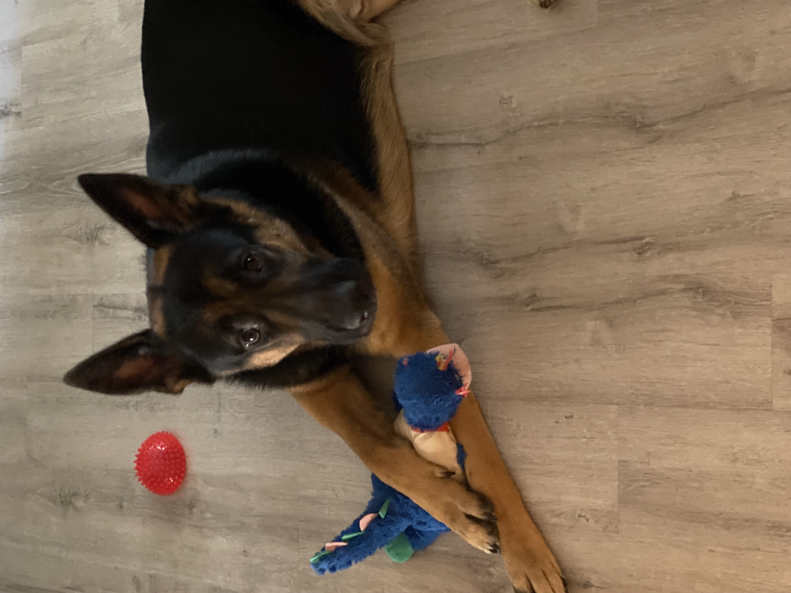
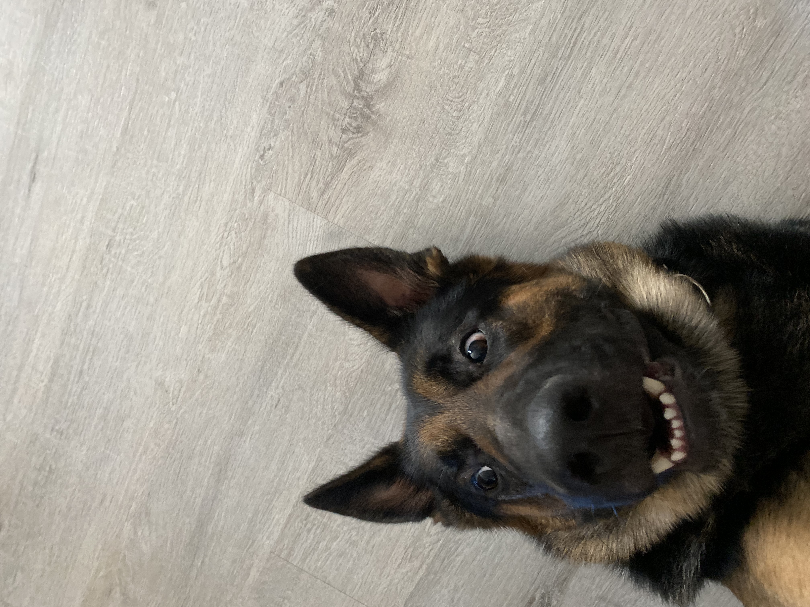
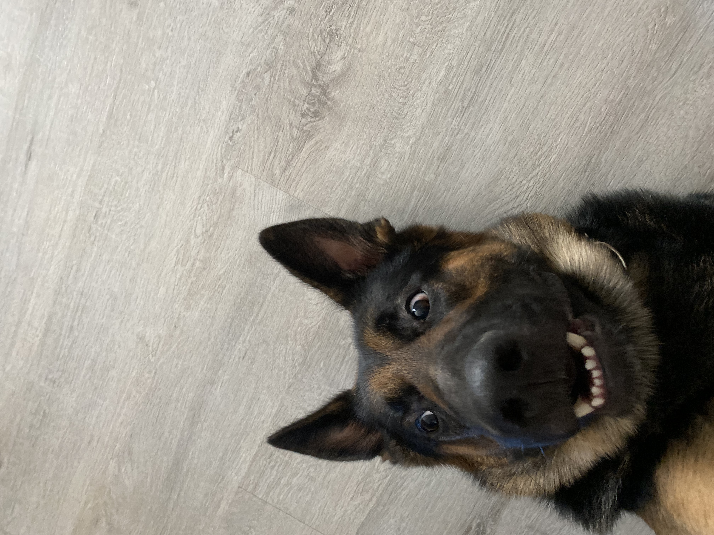

Hi all! My name is Kyle and I thank you for stopping by to learn a little bit about me. Currently, I am happily engaged to my beautiful fiancée, Gianna. We own a German Shepherd, Bentley, who keeps us on our toes. By toes I mean we never know when the next emergency vet visit will be. If you have ever owned a Shepherd you may understand the crazy 3 year old child that they will forever inherit. For a Shepherd there is an extremely fine line between relaxing and parkour.
 

There have been a few stressful but positive changes in our lives. Gianna and I are attempting to get married but we are about to become home owners as well. To say things are a little hectic would be correct. With this said, I always try to set aside time to learn and keep up with new technologies. My newest interest has been cloud and security and how they work together.
Realistically, the cloud is just infrastructure that someone else owns so the underlying methodologies are the same but the tools can be a bit different. A lot of the posts that I put up are topics that are new to me as well. I didn't wake up and suddenly know how to use YAML files and how to implement these tools but I am learning as I make each blog post. Some posts I will be familiar with such as vulnerability scanning and patching (WSUS, batchpatch, etc) with nmap or tenable products such as Nessus but this won't stop me from finding new ways to secure my cloud environment as well as my home network. I will be able to go as far in the cloud as money allows, although cheap, the cost on AWS can add up slowly but surely.